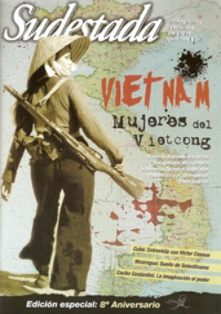

Buscar
Sueño de Solentiname
Un fantasma recorre el archipiélago de Solentiname... Es el fantasma inasible del general Augusto César Sandino, que desde hace décadas impone su sombra libertaria sobre la geografía de estas islas que fueron símbolo de la revolución sandinista de 1979. Hoy, treinta años después de aquella épica victoria del pueblo de Nicaragua contra el dictador Somoza, Sudestada recorre las tierras del poeta y sacerdote Ernesto Cardenal, en busca de un fantasma que sigue tan vigente como entonces.
Edición N° 81
Agosto 2009
Revista bimensual
Comprar edición impresaSumario
- Vietnam. Mujeres del Vietcong
- Contra los molinos de viento
- Cacho Costantini: La imaginación al papel
- Víctor Casaus: "La esperanza nos ofrece sus destellos"
- Sueño de Solentiname
- Villa Constitución, 1975. Memoria del fuego
Compartir Articulo
Es difícil, recorriendo la Managua de hoy, imaginarse lo que fue Nicaragua a fines de los años setenta y ochenta, años de sueños y de lucha. Las mismas calles que en aquel mediodía de julio se llenaron de puños apretados, de banderas rojinegras, de necesidades postergadas, se han convertido en un triste reflejo de un mundo diseñado por unos pocos y para el disfrute de unos pocos. Inmensos centros comerciales y ostentosos hoteles comparten el espacio urbano con un océano de casas bajas que se pierde hasta donde llega la vista. En esas barriadas vive la inmensa mayoría de los nicaragüenses, pueblo aguerrido que no dudó en entregar su vida por la revolución y que hoy intenta sobrevivir en un país que se ha convertido en el segundo más pobre de América toda.
¿Dónde encontrar en estos tiempos la punta del ovillo que nos permita volver a creer en un futuro distinto y comenzar a transformar este presente, que no es más que el legado de cinco décadas de dictadura somocista, una década de guerra sucia y dos decenios de las más crudas recetas neoliberales? Al fin y al cabo, Nicaragua es otra de las heridas abiertas de un continente que se ha puesto de pie ante el imperio, y que fue arrasado de manera impune para poder proseguir ininterrumpidamente con la dinámica del saqueo. Duele y mucho mirar atrás, pero también es necesario zambullirse en la historia reciente, aunque mucho cueste recorrer el dolor cuando aún está cerca, y rescatar aquellas experiencias cuya vigencia pueda ayudar a trazar nuevos caminos.
Ya aprendimos que no hay fin de la historia, y esta es una de las razones que nos demuestra que Nicaragua -y por qué no, América Latina- volverá a ponerse de pie. En esa vigilia está la figura de Sandino, en lo más alto de Managua, como para recordarnos que la lucha sigue. Un poeta le cantó una vez a este gran ejemplo de la rebeldía y el coraje latinoamericano que fue Sandino: "Creyeron que te mataban con una orden de fuego, y lo que en realidad hacían era enterrar una semilla". Ese poeta se llama Ernesto Cardenal y, junto con la comunidad de Solentiname fundada en lo más recóndito del Lago Nicaragua, es la semilla de esta historia...
(La nota completa en la edición gráfica de Sudestada)
Comentarios
Claudio Fierro, Marcela Lescano Hughes y Adriano Prandi
Articulos más vistos


LIBRERÍA SUDESTADA

Colección infantil

Distribuidora de Libros

Suscripción

Sudestada en URUGUAY

Otros articulos de esta edición
Vietnam. Mujeres del Vietcong
Tran Thi Gung apunta con su fusil en mitad de una emboscada. Dang Thuy Tram es doctora en un hospital ...
Villa Constitución, 1975. Memoria del fuego
El 20 de marzo de 1975, el gobierno de Isabel Perón lanzó una feroz represión contra los obreros metalúrgicos en ...
Cacho Costantini: La imaginación al papel
De la narrativa al teatro, pasando por la poesía y el ensayo con mirada militante, la vasta obra de Humberto ...
Víctor Casaus: "La esperanza nos ofrece sus destellos"
Es poeta, cineasta, periodista: Víctor Casaus, uno de los principales referentes intelectuales de Cuba y director del Centro Cultural Pablo ...